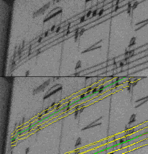

Photos contributed by friends are more clear and readable than I expected. So maybe blurriness won’t be a big problem. Nevertheless I overhauled staff line detection to handle blurriness better. This photo shows it performing well in a stress test with a steep slope:

All this time I’ve been testing on somewhat blurry images:
But just now I tried it out with a different camera, poor lighting conditions, and some accidental motion blur:
Hmm, it would be pretty hard for me to transcribe that even manually, so automatically might not be feasible. I might have to ask people to take pictures from closer up, instead of zooming out to get the full page.
At the time I write this, Song Reader is a stand-alone program that runs on my Mac Mini. And it only has been run on a few different photos, because I haven’t finished implementing the techniques to accurately read those photos yet. So it seemed early to publicize on the web.
But the other day, a friend encouraged me to create a web site and a demo for what I have so far. I think he’s right. Improving accuracy is an endless task, but even a rather inaccurate scan might be useful to someone, especially once I add online tools for manual error correction. Meanwhile it’s pretty motivating for me to have an audience.
So, here goes… I’ll start with this static blog site for now, and the next goal will be to get a working demo that you all can try out. Thanks for your interest!